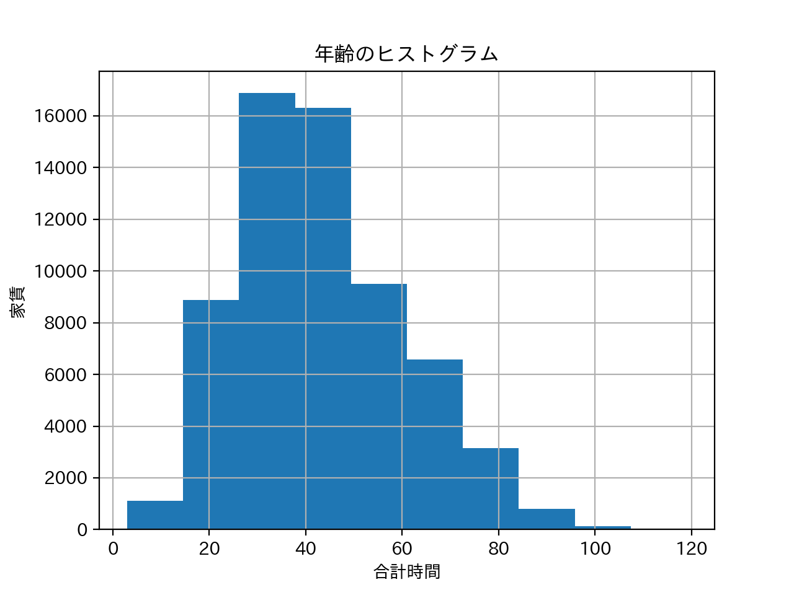
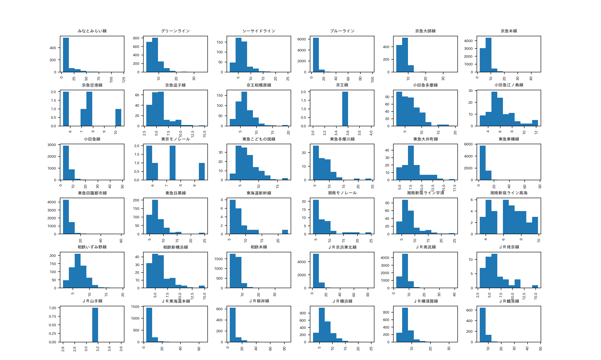
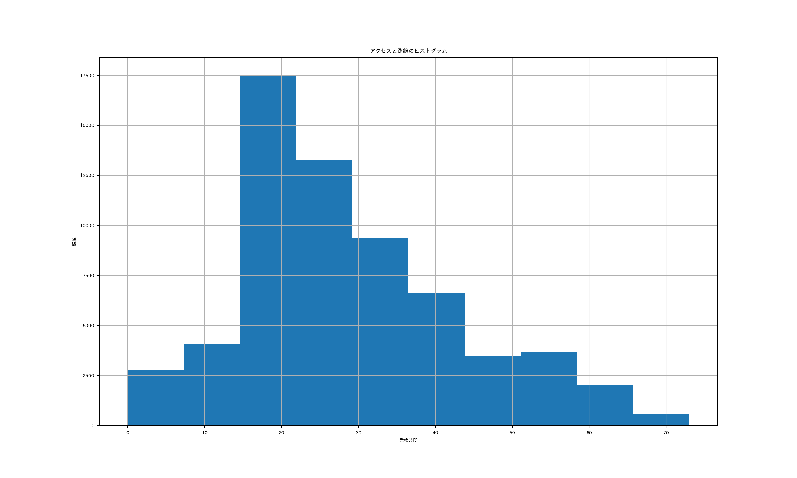
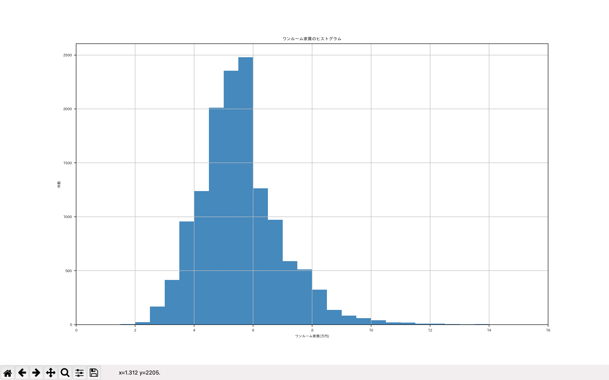
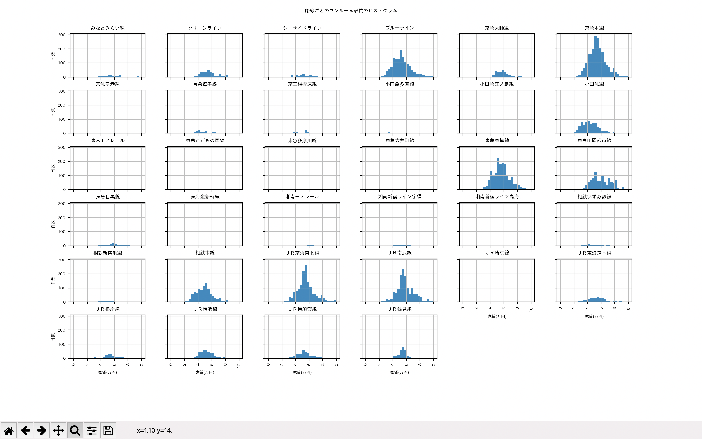

XBP Assignment7
データサイエンス
分析結果
１つ目のヒストグラムは題名を間違えてしまったのですが合計時間と家賃のヒストグラムです。

２つ目は１つ目のヒストグラムをさらに詳しくしたもので、各路線で分けたものです

３つ目はヒストグラムはアクセスと路線で行ったものです

ミス
三つほど出したのですが縦軸と横軸の数値が一部間違っているものがあり使えるか怪しいヒストグラムになってしまいました。そのため道用先生のものを参考にしてみました
参考 道用先生
ワンルーム家賃のヒストグラム

さらに細かくした路線別のワンルーム家賃のヒストグラム

まとめ
これらのヒストグラムからわかるように神奈川大学までの合計時間が短く家賃が安い路線はブルーライン、グリーンラインなどで、自分にとって住みたい、住みやすいはブルーライン、グリーンライン沿いだと思います。
参考ページ
デザイン演習I・II
XBPトップページ